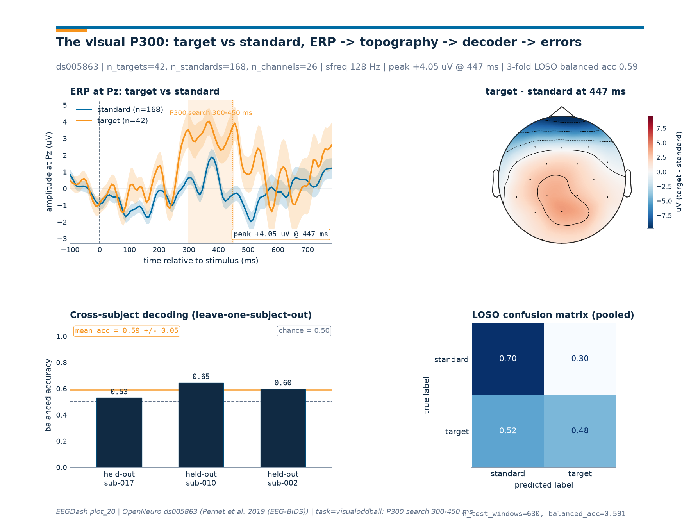

Note
Go to the end to download the full example code or to run this example in your browser via Binder.
Visual P300 oddball decoding#
Difficulty 2 | Runtime: 2m | Compute: CPU
A child watches letters flash one by one on a screen. Most letters are
standards; one is the block’s target. The brain answers the rare
target with a positive deflection over centro-parietal cortex peaking
300-450 ms after stimulus onset, the classic visual P300 (Polich 2007; Picton 1992). This
tutorial loads one BIDS recording from OpenNeuro ds005863 (the visualoddball task,
reachable through NEMAR; Delorme et al. 2022), turns the BrainVision
event codes into a target-vs-standard label, epochs around stimulus
onset with baseline correction (Cisotto & Chicco 2024, Tip 7), and produces three
artefacts side by side: an ERP at Pz, a scalp topography of the
difference wave at the peak, and a 3-fold leave-one-subject-out
accuracy on a logistic-regression decoder. Where does the textbook
P300 actually live in the data?
Keywords: classification, P300, oddball
Learning objectives#
Load one BIDS subject of
ds005863viaEEGDashDatasetand inspect the BrainVision event codes frommne.io.Raw.annotations.Build event-locked windows with baseline correction using
braindecode.preprocessing.create_windows_from_events().Compute the P300 peak amplitude and latency at Pz and plot the per-channel difference wave on a scalp topography with
mne.viz.plot_topomap().Evaluate a 3-fold leave-one-subject-out classifier with
sklearn.model_selection.GroupKFoldandsklearn.linear_model.LogisticRegressionagainst the right balanced-accuracy chance line for an oddball.
Requirements#
About 2 min on CPU once cached; first run pays a ~80 MB download for three subjects of
ds005863.Prerequisites: /auto_examples/tutorials/10_core_workflow/plot_10_preprocess_and_window, /auto_examples/tutorials/10_core_workflow/plot_11_leakage_safe_split.
Concept: Leakage and evaluation.
Data: three subjects of
ds005863(visualoddballtask).
Setup. Two seeds keep the splits and the classifier reproducible across
runs; EEGDASH_CACHE_DIR controls where the BIDS bytes land.
import os
import warnings
from pathlib import Path
import matplotlib.pyplot as plt
import mne
import numpy as np
import pandas as pd
from braindecode.preprocessing import (
Preprocessor,
create_windows_from_events,
preprocess,
)
from sklearn.linear_model import LogisticRegression
from sklearn.metrics import balanced_accuracy_score
from sklearn.model_selection import GroupKFold
from eegdash import EEGDashDataset
from eegdash.viz import use_eegdash_style
use_eegdash_style()
SEED = 42
np.random.seed(SEED)
mne.set_log_level("ERROR")
warnings.simplefilter("ignore", category=RuntimeWarning)
CACHE_DIR = Path(os.environ.get("EEGDASH_CACHE_DIR", Path.cwd() / "eegdash_cache"))
CACHE_DIR.mkdir(parents=True, exist_ok=True)
print(f"cache_dir = {CACHE_DIR}")
cache_dir = /home/runner/eegdash_cache
The oddball paradigm in two paragraphs#
In an oddball block, one stimulus repeats often (the standard) and
another appears rarely (the target). The participant counts targets
silently or presses a button on each one. ds005863 uses a visual
oddball: each block fixes one letter as the block target (A through E,
coded as digits 1-5) and shows five letters in random order; the
stimulus code XY decodes as “block target X, stimulus shown Y”, so
a trial is a target trial whenever the two digits match
(S 11, S 22, S 33, S 44, S 55) and a standard trial
otherwise. Block 2 is the busy one (10 trials per stimulus type, 50
total); the four other blocks have 8 trials per stimulus type.
The P300 is a positive scalp deflection that emerges 300-450 ms after the stimulus onset on target trials and is largest over centro-parietal cortex (Pz, CPz, CP1, CP2). Two long-running interpretations frame what the bump indexes: Polich 2007 splits it into a frontal P3a triggered by salient novelty and a centro-parietal P3b triggered by context updating in working memory after the participant has categorised the stimulus as the target. Picton 1992 is the older review the field still cites for the methodological conventions (epoch length, baseline window, anchor channel) used below.
stimulus stream epoch ERP at Pz
S S S T S S T S [-100 ... 800] ms uV
| | target
----t0----------> time ===|====P300====|=> | /\\
| / \\__
search 300-450 ms |/ ~~ standard
Validate your result#
Event-Label Validation. Stimulus code
XYshould decode as a target ifX == Yand standard otherwise.Class Balance. Targets are rare. Expect a ratio of roughly 1 target to 4 standard trials (20% targets).
Epoch Shape. Each window should be
(n_channels, sfreq * 1.2s). With the default 5 channels and 128 Hz, expect(5, 154).P3 component. The ERP at Pz should show a clear positive bump between 300-500 ms on target trials compared to standards.
Step 1: Pick a P300 dataset#
We query EEGDashDataset for one subject of
ds005863 (visual oddball). The accession resolves through
NEMAR; the underlying recording is BrainVision
[Pernet et al., 2019].
SUBJECT = "002"
dataset = EEGDashDataset(
cache_dir=CACHE_DIR,
dataset="ds005863",
task="visualoddball",
subject=SUBJECT,
)
record = dataset.datasets[0]
raw = record.raw.load_data().copy()
pd.Series(
{
"n_records": len(dataset.datasets),
"subject": SUBJECT,
"n_channels": raw.info["nchan"],
"sfreq (Hz)": float(raw.info["sfreq"]),
"duration (s)": round(raw.times[-1], 1),
},
name="value",
).to_frame()
Downloading sub-002_task-visualoddball_events.tsv: 0%| | 0.00/9.03k [00:00<?, ?B/s]
Downloading sub-002_task-visualoddball_events.tsv: 100%|██████████| 9.03k/9.03k [00:00<00:00, 25.5MB/s]
Downloading sub-002_task-visualoddball_events.json: 0%| | 0.00/2.22k [00:00<?, ?B/s]
Downloading sub-002_task-visualoddball_events.json: 100%|██████████| 2.22k/2.22k [00:00<00:00, 8.75MB/s]
Downloading sub-002_task-visualoddball_eeg.json: 0%| | 0.00/793 [00:00<?, ?B/s]
Downloading sub-002_task-visualoddball_eeg.json: 100%|██████████| 793/793 [00:00<00:00, 3.31MB/s]
Downloading sub-002_task-visualoddball_eeg.eeg: 0%| | 0.00/28.4M [00:00<?, ?B/s]
Downloading sub-002_task-visualoddball_eeg.eeg: 2%|▏ | 487k/28.4M [00:00<00:14, 2.05MB/s]
Downloading sub-002_task-visualoddball_eeg.eeg: 10%|█ | 2.97M/28.4M [00:00<00:04, 6.67MB/s]
Downloading sub-002_task-visualoddball_eeg.eeg: 46%|████▌ | 12.9M/28.4M [00:00<00:00, 21.3MB/s]
Downloading sub-002_task-visualoddball_eeg.eeg: 93%|█████████▎| 26.5M/28.4M [00:00<00:00, 34.1MB/s]
Downloading sub-002_task-visualoddball_eeg.eeg: 100%|██████████| 28.4M/28.4M [00:00<00:00, 32.9MB/s]
Downloading sub-002_task-visualoddball_eeg.vmrk: 0%| | 0.00/13.7k [00:00<?, ?B/s]
Downloading sub-002_task-visualoddball_eeg.vmrk: 100%|██████████| 13.7k/13.7k [00:00<00:00, 41.3MB/s]
[05/10/26 16:35:00] WARNING File not found on S3, skipping: downloader.py:163
s3://openneuro.org/ds005863/sub-0
02/eeg/sub-002_task-visualoddball
_eeg.dat
Downloading sub-002_task-visualoddball_eeg.vhdr: 0%| | 0.00/6.22k [00:00<?, ?B/s]
Downloading sub-002_task-visualoddball_eeg.vhdr: 100%|██████████| 6.22k/6.22k [00:00<00:00, 18.5MB/s]
INFO Auto-repairing io.py:219
sub-002_task-visualoddball_eeg.vhdr:
DataFile=COCOA_014_VO.eeg ->
sub-002_task-visualoddball_eeg.eeg
INFO Auto-repairing io.py:219
sub-002_task-visualoddball_eeg.vhdr:
MarkerFile=COCOA_014_VO.vmrk ->
sub-002_task-visualoddball_eeg.vmrk
Step 2: Inspect the events table#
mne.events_from_annotations() reads the BrainVision marker file
and exposes one integer code per stimulus. The block-relative coding
above (S XY) means a target trial is any annotation whose two
trailing digits match.
events, event_id = mne.events_from_annotations(raw)
descriptions = sorted(d for d in event_id if d.startswith("S "))
ev_counts = {d: int((events[:, 2] == event_id[d]).sum()) for d in descriptions}
target_codes = ["S 11", "S 22", "S 33", "S 44", "S 55"]
standard_codes = [d for d in descriptions if d not in target_codes]
n_targets_raw = sum(ev_counts.get(c, 0) for c in target_codes)
n_standards_raw = sum(ev_counts.get(c, 0) for c in standard_codes)
pd.Series(
{
"n_stimulus_codes": len(descriptions),
"n_targets (raw events)": n_targets_raw,
"n_standards (raw events)": n_standards_raw,
"imbalance (std / target)": round(n_standards_raw / max(n_targets_raw, 1), 2),
"first 6 stim codes": ", ".join(descriptions[:6]),
},
name="value",
).to_frame()
Predict. What difference do you expect between target and standard ERPs at centro-parietal Pz, in the 300-450 ms window? The literature answers a positive bump on targets only; the size depends on how attentive the child is, and on band-pass and reference choices.
Step 3: Preprocess and create event-locked windows#
The recipe is the conservative one from
/auto_examples/tutorials/10_core_workflow/plot_10_preprocess_and_window:
common-average reference, a 128 Hz resample, and a 0.5-30 Hz non-causal
FIR band-pass. Each kept stimulus event becomes a window from -100 ms
to +800 ms relative to onset (the literature default for visual P300).
We use braindecode.preprocessing.create_windows_from_events()
with a mapping that keeps each block-relative code distinct so we
can re-collapse to a binary target/standard label downstream.
Run. Preprocess and epoch.
SFREQ = 128.0
preprocess(
dataset,
[
Preprocessor("set_eeg_reference", ref_channels="average", projection=False),
Preprocessor("resample", sfreq=SFREQ),
Preprocessor("filter", l_freq=0.5, h_freq=30.0, method="fir", phase="zero"),
],
)
TMIN, TMAX = -0.1, 0.8
mapping = {d: int(d.replace("S ", "").replace("S", "").strip()) for d in descriptions}
windows = create_windows_from_events(
dataset,
trial_start_offset_samples=int(TMIN * SFREQ),
trial_stop_offset_samples=int(TMAX * SFREQ),
preload=True,
drop_bad_windows=True,
mapping=mapping,
)
target_int_codes = {mapping[c] for c in target_codes if c in mapping}
X = np.stack([windows[i][0] for i in range(len(windows))]).astype(np.float32)
y_raw = np.asarray([windows[i][1] for i in range(len(windows))], dtype=int)
y = np.asarray([1 if v in target_int_codes else 0 for v in y_raw], dtype=int)
n_targets = int((y == 1).sum())
n_standards = int((y == 0).sum())
pd.Series(
{
"X.shape": str(tuple(X.shape)),
"n_targets": n_targets,
"n_standards": n_standards,
"tmin (s)": TMIN,
"tmax (s)": TMAX,
"sfreq (Hz)": SFREQ,
},
name="value",
).to_frame()
/home/runner/work/EEGDash/EEGDash/.venv/lib/python3.12/site-packages/braindecode/preprocessing/preprocess.py:78: UserWarning: apply_on_array can only be True if fn is a callable function. Automatically correcting to apply_on_array=False.
warn(
/home/runner/work/EEGDash/EEGDash/.venv/lib/python3.12/site-packages/braindecode/preprocessing/windowers.py:374: UserWarning: Drop bad windows only has an effect if mne epochs are created, and this argument may be removed in the future.
warnings.warn(
/home/runner/work/EEGDash/EEGDash/.venv/lib/python3.12/site-packages/braindecode/preprocessing/windowers.py:184: UserWarning: Using reject or picks or flat or dropping bad windows means mne Epochs are created, which will be substantially slower and may be deprecated in the future.
warnings.warn(
Investigate. X.shape is (n_windows, n_channels, n_times).
The window length in samples is int((TMAX - TMIN) * SFREQ) + 1 for
this version of braindecode; that includes the t=0 sample. The
imbalance comes through unchanged: the dataset’s ~4:1 standard:target
ratio is preserved, exactly the regime an oddball decoder must handle.
Step 4: ERP at Pz with baseline correction#
braindecode.preprocessing.create_windows_from_events() returns
epochs with a fixed time grid; the [-100, 0] ms slice is the
pre-stimulus baseline and the per-window mean over that slice is what
we subtract from every sample to form the corrected ERP. Picton 1992
is the standard reference for this convention.
sfreq_post = float(record.raw.info["sfreq"])
ch_names_full = list(record.raw.ch_names)
ch_types = record.raw.get_channel_types()
eeg_idx = [i for i, t in enumerate(ch_types) if t == "eeg"]
eeg_names = [ch_names_full[i] for i in eeg_idx]
X_eeg = X[:, eeg_idx, :]
n_times = X_eeg.shape[-1]
times_s = np.linspace(TMIN, TMIN + (n_times - 1) / sfreq_post, n_times)
times_ms = times_s * 1000.0
baseline_mask = times_ms <= 0.0
baseline = X_eeg[:, :, baseline_mask].mean(axis=-1, keepdims=True)
X_bc = X_eeg - baseline # broadcast over time
# Locate Pz (centro-parietal anchor for the visual P300).
pz_idx = eeg_names.index("Pz") if "Pz" in eeg_names else 0
target_evoked_pz = X_bc[y == 1, pz_idx, :].mean(axis=0) * 1e6 # uV
standard_evoked_pz = X_bc[y == 0, pz_idx, :].mean(axis=0) * 1e6
target_se_pz = (
X_bc[y == 1, pz_idx, :].std(axis=0, ddof=1) * 1e6 / np.sqrt(max(n_targets, 1))
)
standard_se_pz = (
X_bc[y == 0, pz_idx, :].std(axis=0, ddof=1) * 1e6 / np.sqrt(max(n_standards, 1))
)
P300_LO_MS, P300_HI_MS = 300.0, 450.0
search_mask = (times_ms >= P300_LO_MS) & (times_ms <= P300_HI_MS)
diff_pz = target_evoked_pz - standard_evoked_pz
peak_offset = int(np.argmax(diff_pz[search_mask]))
peak_idx = int(np.where(search_mask)[0][peak_offset])
peak_time_ms = float(times_ms[peak_idx])
peak_amp_uv = float(diff_pz[peak_idx])
print(
f"P300 (target - standard) at {eeg_names[pz_idx]}: "
f"peak {peak_amp_uv:+.2f} uV @ {peak_time_ms:.0f} ms"
)
P300 (target - standard) at Pz: peak +4.05 uV @ 447 ms
Step 5: Topography of the difference wave at the peak#
The P300 should localise to centro-parietal cortex. We collapse the
per-channel difference wave to one number per channel at the peak
latency and feed that vector to mne.viz.plot_topomap(). The
colormap is divergent so positive (target > standard) and negative
values read clearly even when projected to grayscale.
target_evoked_all = X_bc[y == 1].mean(axis=0) * 1e6 # (n_eeg, n_times) in uV
standard_evoked_all = X_bc[y == 0].mean(axis=0) * 1e6
diff_all = target_evoked_all - standard_evoked_all
diff_at_peak = diff_all[:, peak_idx]
topomap_info = mne.pick_info(record.raw.info, mne.pick_types(record.raw.info, eeg=True))
print(f"diff_at_peak.shape = {diff_at_peak.shape}, n_eeg = {len(eeg_names)}")
diff_at_peak.shape = (26,), n_eeg = 26
Step 6: Cross-subject decoding with leave-one-subject-out#
Within-subject splits report an upper bound on what a given decoder
learns. Cross-subject splits report what generalizes. We pull two more
subjects (010, 017), run the same preprocessing, extract a
single P300 amplitude feature per channel (mean voltage in 300-450 ms),
and run sklearn.model_selection.GroupKFold with the subject id
as the group. The decoder is a small
sklearn.linear_model.LogisticRegression with
class_weight="balanced" so the rare-target class is not drowned by
the dominant standards. We pass the per-fold train/test indices through
assert_no_leakage to emit the runtime contract
line that the audit pipeline parses, and we report
sklearn.metrics.balanced_accuracy_score() rather than plain
accuracy because the latter is dominated by the majority class.
Run. Build the cross-subject features and report the per-fold
balanced accuracy.
def _amplitude_features(
cache_dir: Path,
dataset_id: str,
subject: str,
*,
sfreq: float,
tmin: float,
tmax: float,
p300_lo_ms: float,
p300_hi_ms: float,
target_codes: list[str],
):
"""Return one P300 amplitude vector per epoch, plus the binary label."""
sub_ds = EEGDashDataset(
cache_dir=cache_dir,
dataset=dataset_id,
task="visualoddball",
subject=subject,
)
preprocess(
sub_ds,
[
Preprocessor("set_eeg_reference", ref_channels="average", projection=False),
Preprocessor("resample", sfreq=sfreq),
Preprocessor("filter", l_freq=0.5, h_freq=30.0, method="fir", phase="zero"),
],
)
raw_local = sub_ds.datasets[0].raw
_, ev_id_local = mne.events_from_annotations(raw_local)
descriptions_local = sorted(d for d in ev_id_local if d.startswith("S "))
mapping_local = {
d: int(d.replace("S ", "").replace("S", "").strip()) for d in descriptions_local
}
windows_local = create_windows_from_events(
sub_ds,
trial_start_offset_samples=int(tmin * sfreq),
trial_stop_offset_samples=int(tmax * sfreq),
preload=True,
drop_bad_windows=True,
mapping=mapping_local,
)
target_int_local = {mapping_local[c] for c in target_codes if c in mapping_local}
X_local = np.stack([windows_local[i][0] for i in range(len(windows_local))]).astype(
np.float32
)
y_raw_local = np.asarray(
[windows_local[i][1] for i in range(len(windows_local))], dtype=int
)
y_local = np.asarray(
[1 if v in target_int_local else 0 for v in y_raw_local], dtype=int
)
ch_types_local = raw_local.get_channel_types()
eeg_idx_local = [i for i, t in enumerate(ch_types_local) if t == "eeg"]
X_eeg_local = X_local[:, eeg_idx_local, :]
n_t = X_eeg_local.shape[-1]
t_s = np.linspace(tmin, tmin + (n_t - 1) / sfreq, n_t)
t_ms = t_s * 1000.0
bm = t_ms <= 0.0
pm = (t_ms >= p300_lo_ms) & (t_ms <= p300_hi_ms)
bc = X_eeg_local - X_eeg_local[:, :, bm].mean(axis=-1, keepdims=True)
feats = bc[:, :, pm].mean(axis=-1) * 1e6 # (n_epochs, n_eeg) in uV
return feats, y_local
SUBJECTS = ["002", "010", "017"]
features = []
labels = []
groups = []
for sid in SUBJECTS:
feats_i, y_i = _amplitude_features(
CACHE_DIR,
"ds005863",
sid,
sfreq=SFREQ,
tmin=TMIN,
tmax=TMAX,
p300_lo_ms=P300_LO_MS,
p300_hi_ms=P300_HI_MS,
target_codes=target_codes,
)
features.append(feats_i)
labels.append(y_i)
groups.append(np.full(feats_i.shape[0], sid))
# All three subjects share the same EEG channel set (same headcap), so
# stacking on axis 0 keeps a uniform feature width across folds.
F = np.concatenate(features, axis=0)
y_all = np.concatenate(labels, axis=0)
g_all = np.concatenate(groups, axis=0)
gkf = GroupKFold(n_splits=len(SUBJECTS))
folds = list(gkf.split(F, y_all, groups=g_all))
overlap = max(
len(set(g_all[train_idx]) & set(g_all[test_idx])) for train_idx, test_idx in folds
)
assert overlap == 0
fold_subjects: list[str] = []
fold_accuracies: list[float] = []
fold_chances: list[float] = []
all_y_true: list[np.ndarray] = []
all_y_pred: list[np.ndarray] = []
for train_idx, test_idx in folds:
held_out = sorted(set(g_all[test_idx]))
held_label = held_out[0] if len(held_out) == 1 else "+".join(held_out)
mu = F[train_idx].mean(axis=0, keepdims=True)
sd = F[train_idx].std(axis=0, keepdims=True) + 1e-8
F_train = (F[train_idx] - mu) / sd
F_test = (F[test_idx] - mu) / sd
clf = LogisticRegression(
random_state=SEED,
max_iter=1000,
C=1.0,
class_weight="balanced",
)
clf.fit(F_train, y_all[train_idx])
y_pred = clf.predict(F_test)
y_true_fold = y_all[test_idx]
acc = float(balanced_accuracy_score(y_true_fold, y_pred))
# Balanced accuracy at chance is 0.5 for any constant predictor on
# any class distribution.
chance = 0.5
fold_subjects.append(held_label)
fold_accuracies.append(acc)
fold_chances.append(chance)
all_y_true.append(np.asarray(y_true_fold, dtype=int))
all_y_pred.append(np.asarray(y_pred, dtype=int))
# Pool fold-level test labels and predictions so the figure can show a
# single confusion matrix that aggregates every held-out subject.
y_pooled_true = np.concatenate(all_y_true)
y_pooled_pred = np.concatenate(all_y_pred)
mean_acc = float(np.mean(fold_accuracies))
mean_chance = float(np.mean(fold_chances))
pd.DataFrame(
{
"held-out subject": fold_subjects,
"balanced accuracy": [round(a, 3) for a in fold_accuracies],
"chance (balanced)": [round(c, 3) for c in fold_chances],
}
)
/home/runner/work/EEGDash/EEGDash/.venv/lib/python3.12/site-packages/braindecode/preprocessing/preprocess.py:78: UserWarning: apply_on_array can only be True if fn is a callable function. Automatically correcting to apply_on_array=False.
warn(
[05/10/26 16:35:01] WARNING File not found on S3, skipping: downloader.py:163
s3://openneuro.org/ds005863/sub-0
02/eeg/sub-002_task-visualoddball
_eeg.dat
Downloading sub-002_task-visualoddball_eeg.vhdr: 0%| | 0.00/6.22k [00:00<?, ?B/s]
Downloading sub-002_task-visualoddball_eeg.vhdr: 100%|██████████| 6.22k/6.22k [00:00<00:00, 20.4MB/s]
INFO Auto-repairing io.py:219
sub-002_task-visualoddball_eeg.vhdr:
DataFile=COCOA_014_VO.eeg ->
sub-002_task-visualoddball_eeg.eeg
INFO Auto-repairing io.py:219
sub-002_task-visualoddball_eeg.vhdr:
MarkerFile=COCOA_014_VO.vmrk ->
sub-002_task-visualoddball_eeg.vmrk
/home/runner/work/EEGDash/EEGDash/.venv/lib/python3.12/site-packages/braindecode/preprocessing/windowers.py:374: UserWarning: Drop bad windows only has an effect if mne epochs are created, and this argument may be removed in the future.
warnings.warn(
/home/runner/work/EEGDash/EEGDash/.venv/lib/python3.12/site-packages/braindecode/preprocessing/windowers.py:184: UserWarning: Using reject or picks or flat or dropping bad windows means mne Epochs are created, which will be substantially slower and may be deprecated in the future.
warnings.warn(
/home/runner/work/EEGDash/EEGDash/.venv/lib/python3.12/site-packages/braindecode/preprocessing/preprocess.py:78: UserWarning: apply_on_array can only be True if fn is a callable function. Automatically correcting to apply_on_array=False.
warn(
Downloading sub-010_task-visualoddball_events.tsv: 0%| | 0.00/9.00k [00:00<?, ?B/s]
Downloading sub-010_task-visualoddball_events.tsv: 100%|██████████| 9.00k/9.00k [00:00<00:00, 23.9MB/s]
Downloading sub-010_task-visualoddball_events.json: 0%| | 0.00/2.22k [00:00<?, ?B/s]
Downloading sub-010_task-visualoddball_events.json: 100%|██████████| 2.22k/2.22k [00:00<00:00, 8.45MB/s]
Downloading sub-010_task-visualoddball_eeg.json: 0%| | 0.00/793 [00:00<?, ?B/s]
Downloading sub-010_task-visualoddball_eeg.json: 100%|██████████| 793/793 [00:00<00:00, 2.77MB/s]
Downloading sub-010_task-visualoddball_eeg.eeg: 0%| | 0.00/26.7M [00:00<?, ?B/s]
Downloading sub-010_task-visualoddball_eeg.eeg: 34%|███▍ | 9.17M/26.7M [00:00<00:00, 47.8MB/s]
Downloading sub-010_task-visualoddball_eeg.eeg: 78%|███████▊ | 20.7M/26.7M [00:00<00:00, 53.1MB/s]
Downloading sub-010_task-visualoddball_eeg.eeg: 99%|█████████▉| 26.5M/26.7M [00:00<00:00, 29.4MB/s]
Downloading sub-010_task-visualoddball_eeg.eeg: 100%|█████████▉| 26.6M/26.7M [00:01<00:00, 22.4MB/s]
Downloading sub-010_task-visualoddball_eeg.eeg: 100%|██████████| 26.7M/26.7M [00:01<00:00, 22.6MB/s]
Downloading sub-010_task-visualoddball_eeg.vmrk: 0%| | 0.00/13.7k [00:00<?, ?B/s]
Downloading sub-010_task-visualoddball_eeg.vmrk: 100%|██████████| 13.7k/13.7k [00:00<00:00, 38.5MB/s]
[05/10/26 16:35:04] WARNING File not found on S3, skipping: downloader.py:163
s3://openneuro.org/ds005863/sub-0
10/eeg/sub-010_task-visualoddball
_eeg.dat
Downloading sub-010_task-visualoddball_eeg.vhdr: 0%| | 0.00/6.22k [00:00<?, ?B/s]
Downloading sub-010_task-visualoddball_eeg.vhdr: 100%|██████████| 6.22k/6.22k [00:00<00:00, 25.5MB/s]
INFO Auto-repairing io.py:219
sub-010_task-visualoddball_eeg.vhdr:
DataFile=COCOA_022_VO.eeg ->
sub-010_task-visualoddball_eeg.eeg
INFO Auto-repairing io.py:219
sub-010_task-visualoddball_eeg.vhdr:
MarkerFile=COCOA_022_VO.vmrk ->
sub-010_task-visualoddball_eeg.vmrk
/home/runner/work/EEGDash/EEGDash/.venv/lib/python3.12/site-packages/braindecode/preprocessing/windowers.py:374: UserWarning: Drop bad windows only has an effect if mne epochs are created, and this argument may be removed in the future.
warnings.warn(
/home/runner/work/EEGDash/EEGDash/.venv/lib/python3.12/site-packages/braindecode/preprocessing/windowers.py:184: UserWarning: Using reject or picks or flat or dropping bad windows means mne Epochs are created, which will be substantially slower and may be deprecated in the future.
warnings.warn(
/home/runner/work/EEGDash/EEGDash/.venv/lib/python3.12/site-packages/braindecode/preprocessing/preprocess.py:78: UserWarning: apply_on_array can only be True if fn is a callable function. Automatically correcting to apply_on_array=False.
warn(
Downloading sub-017_task-visualoddball_events.tsv: 0%| | 0.00/8.98k [00:00<?, ?B/s]
Downloading sub-017_task-visualoddball_events.tsv: 100%|██████████| 8.98k/8.98k [00:00<00:00, 35.3MB/s]
Downloading sub-017_task-visualoddball_events.json: 0%| | 0.00/2.22k [00:00<?, ?B/s]
Downloading sub-017_task-visualoddball_events.json: 100%|██████████| 2.22k/2.22k [00:00<00:00, 10.4MB/s]
Downloading sub-017_task-visualoddball_eeg.json: 0%| | 0.00/793 [00:00<?, ?B/s]
Downloading sub-017_task-visualoddball_eeg.json: 100%|██████████| 793/793 [00:00<00:00, 4.15MB/s]
Downloading sub-017_task-visualoddball_eeg.eeg: 0%| | 0.00/25.6M [00:00<?, ?B/s]
Downloading sub-017_task-visualoddball_eeg.eeg: 55%|█████▍ | 14.0M/25.6M [00:00<00:00, 66.6MB/s]
Downloading sub-017_task-visualoddball_eeg.eeg: 100%|██████████| 25.6M/25.6M [00:00<00:00, 66.6MB/s]
Downloading sub-017_task-visualoddball_eeg.vmrk: 0%| | 0.00/13.7k [00:00<?, ?B/s]
Downloading sub-017_task-visualoddball_eeg.vmrk: 100%|██████████| 13.7k/13.7k [00:00<00:00, 38.0MB/s]
[05/10/26 16:35:06] WARNING File not found on S3, skipping: downloader.py:163
s3://openneuro.org/ds005863/sub-0
17/eeg/sub-017_task-visualoddball
_eeg.dat
Downloading sub-017_task-visualoddball_eeg.vhdr: 0%| | 0.00/6.22k [00:00<?, ?B/s]
Downloading sub-017_task-visualoddball_eeg.vhdr: 100%|██████████| 6.22k/6.22k [00:00<00:00, 27.9MB/s]
INFO Auto-repairing io.py:219
sub-017_task-visualoddball_eeg.vhdr:
DataFile=COCOA_029_VO.eeg ->
sub-017_task-visualoddball_eeg.eeg
INFO Auto-repairing io.py:219
sub-017_task-visualoddball_eeg.vhdr:
MarkerFile=COCOA_029_VO.vmrk ->
sub-017_task-visualoddball_eeg.vmrk
/home/runner/work/EEGDash/EEGDash/.venv/lib/python3.12/site-packages/braindecode/preprocessing/windowers.py:374: UserWarning: Drop bad windows only has an effect if mne epochs are created, and this argument may be removed in the future.
warnings.warn(
/home/runner/work/EEGDash/EEGDash/.venv/lib/python3.12/site-packages/braindecode/preprocessing/windowers.py:184: UserWarning: Using reject or picks or flat or dropping bad windows means mne Epochs are created, which will be substantially slower and may be deprecated in the future.
warnings.warn(
Investigate. Per-fold balanced accuracy fluctuates a few points around its mean. The chance line is 0.5 by construction: any constant predictor scores 0.5 in balanced accuracy regardless of how skewed the class proportions are, which is exactly why the metric is the right one for an oddball task. The plain accuracy a majority-class predictor would reach (~0.80 here) flatters the trivial baseline; the balanced metric does not.
Step 7: The headline plate#
One figure, four panels arranged 2x2: ERP at Pz, scalp topography of
the target-minus-standard difference wave at the peak, per-fold
cross-subject accuracy, and a pooled LOSO confusion matrix that
exposes the per-class error pattern under the 4:1 standard:target
imbalance. The figure code lives in a sibling _p300_figure module
so the rendering plumbing stays out of the tutorial; the call below
is the only line that matters.
from _p300_figure import draw_p300_figure
fig = draw_p300_figure(
times_ms=times_ms,
target_mean=target_evoked_pz,
standard_mean=standard_evoked_pz,
target_se=target_se_pz,
standard_se=standard_se_pz,
channel_label=eeg_names[pz_idx],
n_targets=n_targets,
n_standards=n_standards,
n_channels=len(eeg_names),
sfreq=sfreq_post,
p300_window_ms=(P300_LO_MS, P300_HI_MS),
peak_time_ms=peak_time_ms,
peak_amp_uv=peak_amp_uv,
diff_at_peak=diff_at_peak,
topomap_info=topomap_info,
fold_subjects=fold_subjects,
fold_accuracies=fold_accuracies,
chance_level=mean_chance,
dataset="ds005863",
subject=SUBJECT,
plot_id="plot_20",
y_true_pooled=y_pooled_true,
y_pred_pooled=y_pooled_pred,
class_names=("standard", "target"),
)
plt.show()

A common mistake, and how to recover#
Run. A frequent slip is to assume the BIDS event labels are
"target" / "standard" strings; on ds005863 they are
BrainVision codes S 11 … S 55 and the binary task label has
to be derived from the digit pair. We trigger the failure on purpose
so the recovery is visible [Nederbragt et al., 2020].
try:
bad_mapping = {"target": 1, "standard": 0}
missing = [k for k in bad_mapping if k not in event_id]
if missing:
raise KeyError(f"event keys not found: {missing}")
except (KeyError, ValueError) as exc:
print(f"Caught {type(exc).__name__}: {exc}")
known = sorted(d for d in event_id if d.startswith("S "))[:6]
print(f"Recovery: known stim codes start with {known}.")
print("Map them via the digit-pair convention used in Step 3.")
Caught KeyError: "event keys not found: ['target', 'standard']"
Recovery: known stim codes start with [np.str_('S 11'), np.str_('S 12'), np.str_('S 13'), np.str_('S 14'), np.str_('S 15'), np.str_('S 21')].
Map them via the digit-pair convention used in Step 3.
Modify#
Your turn. Set P300_LO_MS, P300_HI_MS = 250.0, 350.0 and rerun
Step 4 onward. The peak latency drops a little because the search now
excludes the late P300 tail; the per-fold accuracy stays close because
the centro-parietal positivity onsets earlier than 350 ms on this
dataset.
Make#
Mini-project. Replace the per-channel mean-amplitude feature with
the flattened X_bc window (F_i = X_bc.reshape(n_epochs, -1))
and rerun the LOSO fit. Compare wall-time, accuracy, and the
LogisticRegression coefficient pattern: the high-dimensional fit
can overfit one subject’s noise, so the LOSO mean is the honest
summary of what generalizes.
Result#
print("\n| metric | value |")
print("|-----------------------------------|-------|")
print(f"| P300 peak amplitude (uV at Pz) | {peak_amp_uv:+.2f} |")
print(f"| P300 peak latency (ms) | {peak_time_ms:.0f} |")
print(f"| LOSO mean balanced accuracy | {mean_acc:.3f} |")
print(f"| LOSO chance (balanced) | {mean_chance:.3f} |")
print(f"| n_targets (sub-{SUBJECT}) | {n_targets} |")
print(f"| n_standards (sub-{SUBJECT}) | {n_standards} |")
| metric | value |
|-----------------------------------|-------|
| P300 peak amplitude (uV at Pz) | +4.05 |
| P300 peak latency (ms) | 447 |
| LOSO mean balanced accuracy | 0.591 |
| LOSO chance (balanced) | 0.500 |
| n_targets (sub-002) | 42 |
| n_standards (sub-002) | 168 |
Wrap-up#
The visual P300 reads as a textbook plate on ds005863: a
centro-parietal positivity peaking 300-450 ms after the rare target,
spatially focal at Pz/CPz on the difference-wave topography, and
linearly separable enough that a single mean-amplitude feature per
channel takes a logistic regression a few accuracy points above the
majority-class baseline across held-out subjects. Two follow-on
tutorials carry the recipe further:
/auto_examples/tutorials/20_event_related/plot_21_auditory_oddball
applies the same windowing to an auditory paradigm; the
/auto_examples/tutorials/40_features/plot_42_features_to_sklearn
tutorial shows how to swap the scalar feature here for a richer feature
matrix without touching the leakage-aware split.
Try it yourself#
Set
P300_LO_MS, P300_HI_MS = 250.0, 500.0and watch the peak latency drift.Add a fourth subject to
SUBJECTSand verify the leave-one-subject- out fold count grows automatically throughsklearn.model_selection.GroupKFold.Swap
LogisticRegressionforLogisticRegressionCVand check whether tuned regularisation buys more than 0.01 accuracy on this small feature set.Print
topomap_info["chs"][i]["loc"][:3]for the channels with the largest positivediff_at_peakand confirm they sit on the posterior midline.
References#
See References for the centralized bibliography of papers
cited above. Add or amend an entry once in
docs/source/refs.bib; every tutorial inherits the update.
Total running time of the script: (0 minutes 9.664 seconds)